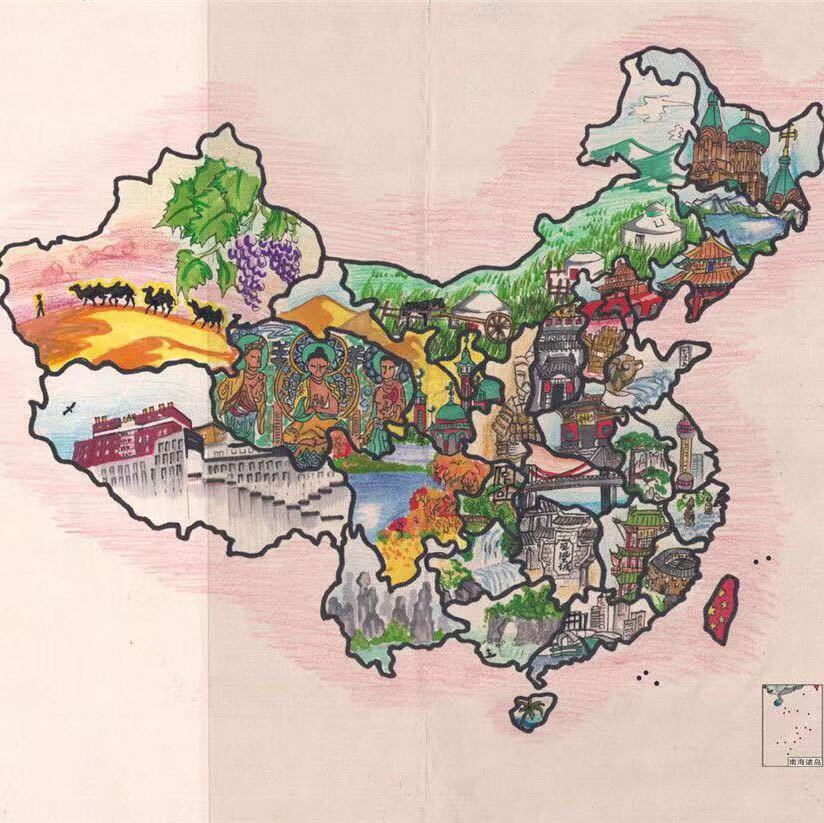

了解标准中国地图
🇨🇳 中国版图基本信息
中国是一个幅员辽阔、资源丰富的国家，拥有悠久的历史和灿烂的文化。了解中国的版图基本信息，对于正确认识我们的祖国具有重要意义。

陆地面积
约960万平方公里
世界第三大国家
海域面积
约300万平方公里
包括内水、领海、毗连区等
陆地边界
约2.28万公里
与14个国家接壤
海岸线
约1.8万公里
大陆海岸线长度
行政区划
中国现行的行政区划分为省级、县级、乡级三级。截至2026年，全国共有34个省级行政区，包括：
- 23个省：河北省、山西省、辽宁省、吉林省、黑龙江省、江苏省、浙江省、安徽省、福建省、江西省、山东省、河南省、湖北省、湖南省、广东省、海南省、四川省、贵州省、云南省、陕西省、甘肃省、青海省、台湾省
- 5个自治区：内蒙古自治区、广西壮族自治区、西藏自治区、宁夏回族自治区、新疆维吾尔自治区
- 4个直辖市：北京市、天津市、上海市、重庆市
- 2个特别行政区：香港特别行政区、澳门特别行政区
邻国情况
中国陆地与14个国家接壤，按逆时针顺序依次是：
- 朝鲜、俄罗斯、蒙古、哈萨克斯坦、吉尔吉斯斯坦、塔吉克斯坦、阿富汗、巴基斯坦、印度、尼泊尔、不丹、缅甸、老挝、越南
海上与8个国家相邻或相向，包括：韩国、日本、菲律宾、文莱、马来西亚、印度尼西亚、越南、朝鲜。
🗺️ 标准中国地图
标准地图的定义
标准中国地图是指按照国家规定的标准绘制的中国地图，是国家主权和领土完整的重要象征。
1960版标准地图
我国现在通用的标准地图是1960年版的地图。这一版地图确立了中国地图的标准画法，包括：
- 明确了中国的领土范围，包括台湾、南海诸岛等
- 规范了省级行政区的边界线
- 确定了地图的投影方式和比例尺
- 统一了地名的拼写和标注方式
标准地图的重要性
使用标准地图具有重要意义：
- 维护国家主权和领土完整
- 确保地理信息的准确性
- 促进地图市场的规范化
- 方便公众获取正确的地理信息
获取标准地图的渠道
公众可以通过以下渠道获取标准地图：
- 自然资源部官方网站
- 省级自然资源主管部门网站
- 专业地图出版社出版的地图集
- 正规地图APP和在线地图服务
⚠️ 使用中国地图常见错误
版图错误
台湾岛
错误：将台湾省按国家对待，使用不同颜色或标注
主权依据
台湾自古以来就是中国不可分割的一部分：
- 从历史上看，台湾自公元230年三国时期就有中国政权管辖
- 1684年清政府设立台湾府，隶属福建省
- 1895年《马关条约》被割让给日本，1945年抗战胜利后归还中国
- 1949年中华人民共和国成立后，台湾与大陆处于暂时分离状态，但主权归属未变
- 世界上只有一个中国，台湾是中国的一部分，这是国际社会公认的事实
藏南地区
错误：遗漏或错误绘制藏南地区边界
主权依据
藏南地区是中国领土不可分割的一部分：
- 藏南地区历史上一直是西藏的一部分，是藏族等民族的传统聚居区
- 1914年英国炮制的"麦克马洪线"是非法的，中国政府从未承认
- 1959年印度越过实际控制线，导致边境冲突
- 中国对藏南地区拥有无可争辩的主权，这是基于历史、法律、文化和国际关系准则的事实
南海诸岛
错误：遗漏或错误绘制南海诸岛
主权依据
中国对南海诸岛拥有无可争辩的主权：
- 中国是最早发现、命名、开发利用南海诸岛的国家
- 中国对南海诸岛的主权拥有充分的历史和法理依据
- 1947年中国政府公布了南海诸岛的名称和位置
- 1992年《中华人民共和国领海及毗连区法》明确规定南海诸岛是中国领土
- 中国对南海诸岛的主权得到国际社会的广泛承认
钓鱼岛及其附属岛屿
错误：遗漏或错误绘制钓鱼岛及其附属岛屿
主权依据
钓鱼岛及其附属岛屿是中国固有领土：
- 钓鱼岛及其附属岛屿自古以来就是中国的固有领土
- 1403年《顺风相送》就有关于钓鱼岛的记载
- 1895年被日本非法窃取，1945年根据《开罗宣言》和《波茨坦公告》归还中国
- 1972年中日邦交正常化时，双方约定将钓鱼岛问题留待以后解决
- 中国对钓鱼岛及其附属岛屿拥有无可争辩的主权
其他错误
要素遗漏
- 错误：遗漏重要岛屿和群岛，如澎湖列岛、赤尾屿等
- 错误：遗漏重要地理标志，如珠穆朗玛峰、长江、黄河等
- 错误：遗漏省级行政中心或重要城市
标注错误
- 错误：使用错误的地名或拼写
- 错误：使用未经批准的地名
- 错误：标注位置不准确
投影和比例尺错误
- 错误：使用不符合国家标准的地图投影
- 错误：比例尺标注不准确
- 错误：地图变形严重，影响区域面积和距离判断
如何避免地图错误
为避免使用错误地图，建议：
- 使用自然资源部发布的标准地图
- 从正规渠道获取地图资料
- 核对地图的审图号和出版信息
- 关注国家关于地图的最新规定和要求
📜 地图相关法律法规
主要法律法规
- 《中华人民共和国测绘法》：规范测绘活动，保障测绘事业为经济建设、国防建设、社会发展和生态保护服务
- 《地图管理条例》：加强地图管理，维护国家主权、安全和利益
- 《公开地图内容表示若干规定》：规范公开地图内容表示，防止出现错误
法律责任
根据相关法律法规，使用错误地图可能承担以下法律责任：
- 责令停止违法行为，没收违法地图和违法所得
- 处以罚款
- 构成犯罪的，依法追究刑事责任